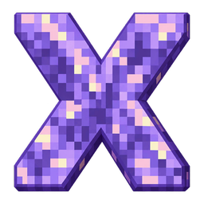

Удобные сборки
Сборка с любым загрузчиком модов за пару кликов, свои группы и заметки. Сборки из других лаунчеров переносятся сами, а своей можно поделиться коротким кодом.

AmethyxЛаунчер Minecraft с модами, скинами и друзьями — красивый, быстрый и бесплатный.
Всё, что нужно, чтобы играть с модами и друзьями, — в одном окне.
Сборка с любым загрузчиком модов за пару кликов, свои группы и заметки. Сборки из других лаунчеров переносятся сами, а своей можно поделиться коротким кодом.
Модпаки, моды, ресурспаки, шейдеры, датапаки и карты в одном месте. Лаунчер сам ставит всё нужное, проверяет совместимость и делает копию миров перед обновлением.
Лаунчер изучает компьютер и сборку, ставит моды для FPS, подбирает память, графику и шейдеры по силам компьютера. Не понравилось — всё возвращается одной кнопкой.
Проверяет моды на конфликты и исправляет их одной кнопкой, советует моды под вашу сборку и находит обновления.
Ваш игрок в 3D на главной: следит за мышкой, машет и танцует. В Гардеробе пять мест для скинов: скин, скачанный на The Skindex или NameMC, появляется там сам.
Кто в сети и во что играет, сообщения и скриншоты. Друг заходит в ваш мир одной кнопкой, а нужную сборку лаунчер соберёт ему сам.
Shift+Tab прямо в игре: позвать друга в мир, ответить в чате, отправить скриншот. Работает в любой версии, в игру ничего не ставится.
Сервер из вашей сборки в пару кликов: консоль, все настройки, мир из сборки. Или готовый пак для любого хостинга.
Файлы качаются в несколько потоков, все моды обновляются разом. И сам лаунчер обновляется без вашего участия.
Мягкий или пиксельный вид, цвет темы, шрифт, значки и панорамы Minecraft. Приятные звуки и кнопки, которые отзываются на каждое нажатие. Всё настраивается под вас.
Windows 10 и 11, отдельная сборка для Windows 7 и 8, macOS на Apple Silicon и Intel. На слабых компьютерах лаунчер сам начинает в лёгком режиме.
Английский, русский, украинский, польский, немецкий, французский, испанский, португальский и китайский. Язык меняется в настройках в любой момент.
Установщик для Windows. Дальше лаунчер обновляется сам.
Скачать для WindowsWindows 10 (1803 и новее) или Windows 11, 64 бита. Java лаунчер скачает сам.
Нет. Можно играть офлайн или через Ely.by. Для серверов, которые проверяют лицензию, нужен аккаунт Microsoft.
Код лаунчера открыт на GitHub. Пароли вводятся только на официальных сайтах Microsoft и Ely.by — лаунчер их не видит.
С Modrinth и CurseForge — крупнейших сайтов модов для Minecraft. Зависимости и совместимость лаунчер проверяет сам.
Никак — он обновляется сам: скачивает новую версию и ставит её, когда вы не играете.
Да: Prism, ElyPrism, Modrinth App, CurseForge, TLauncher, Millida и другие находятся сами — моды, настройки, миры и скриншоты переезжают целиком.